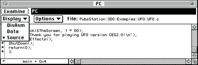
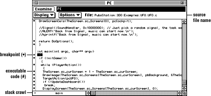
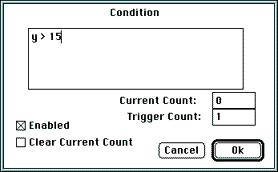
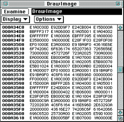
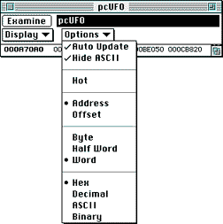
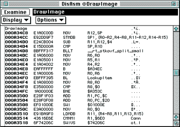
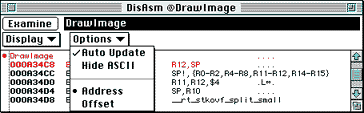

Instead of creating a new window, you can also change the display from one type of data to another using the display window pop-up menu).

Figure 1: Display pop-up menu (Source window).
Note: If you change the window type, all option settings are lost. You may prefer creating a new window to changing the window type if you spent some time on window setup.
The Source window
The Source window displays the source code associated with the current
program. It allows source stepping and highlights the source line that
represents the current PC. You can type one of the expressions listed in
Examine Field Expression Syntax into
the Examine field of the Source window.
Note: You can only examine source code if you have used a makefile that created a symbols file and if you have set up directories appropriately, as discussed in the section Preparing for launch.

Figure 2: Source window.
The figure above illustrates the main parts of the Source window:
Table 1: Working with the Source window.
--------------------------------------------------------
To... |Do this...
--------------------------------------------------------
Open the window|From the View menu, select New Window,
|then Source from the submenu.
|(Command-K)
--------------------------------------------------------
Set a |Click the # character in the column to
breakpoint |the left of the instruction at which you
|want to break. A red bullet () replaces
|the # character. For information on
|conditional breakpoints, see the next
|section.
--------------------------------------------------------
Clear a |Click the red bullet () in the column to
breakpoint |the left of the source line from which
|you want to remove the breakpoint. A
|black # replaces the red bullet ().For
|information on conditional breakpoints,
|see the next section.
--------------------------------------------------------
Execute up to a|If you are stopped at a breakpoint and
specified place|want to execute up to a specific place,
|hold down the Option key and click to
|the left of the last line you want to
|execute.The system sets a temporary
|breakpoint at the location you chose,
|executes up to that breakpoint, then
|removes the breakpoint. If there are
|intermediate breakpoints, the program
|stops there first. None of the program
|instructions are executed, so this is a
|convenient way of skipping over program
|code.
--------------------------------------------------------
Set the PC |To move to a particular line of code in
|the program, set the PC to it:
|Command-Shift-click on the # character
|in the column to the left of the
|instruction to which you want to set the
|PC. The source line becomes highlighted
|to signify the PC.
--------------------------------------------------------
Get detailed |To get detailed information, you can
information |* Shift-click on a function to open
|another Source window at that location.
|* Select a variable by double-clicking
|on it, then press Command-D to view it
|in a Variables window.
--------------------------------------------------------
View a stack |To view a stack crawl, do the following:
crawl |* While the program is not execution,
|click in the Stack Crawl pop-up menu
|area in the bottom left of the Source
|window.
|* Select any of the menu commands to
|display that function.
--------------------------------------------------------
Using conditional breakpoints from the Source
window
If you want to stop your program only when certain conditions are met, you
can set (or edit) a conditional breakpoint. For example, you can set a
counter and break after a certain number of iterations through the loop,
or you can specify to break when a certain variable has a certain value.
You can set and edit conditional breakpoints in both the Source window and the Disassembly window.
Note: Having several conditional breakpoints can severely slow
down your program. Use them with discretion.

Figure 3: Breakpoint Condition window.
A disabled breakpoint no longer interrupts the program.
The Data window
Data windows let you display and edit target machine memory as bytes,
half-words (16 bits), and words (32 bits). The data can be presented in
hexadecimal, decimal, ASCII, or binary format.
This section first provides an overview of all operations, then lists the Data window Options menu commands.

Figure 4: Data window.
Table 2: Working with the Data window.
--------------------------------------------------------
To... |Do this...
--------------------------------------------------------
Open the window|From the View menu, select New Window,
|then Data from the submenu (or press
|Command-B).Double-click on an item in
|another window, then press Command-B to
|view that item in a Data window.
--------------------------------------------------------
Change |Once data is highlighted, use the arrow
selections |keys (up, down, left, and right) to
|quickly move the highlighted selection
|around in the window.
--------------------------------------------------------
Edit ASCII data|To edit ASCII data, follow these steps:
|* Click on the character you wish to
|edit.
|* Type the new character. You don't have
|to press the Tab, Return, or Enter keys.
|
--------------------------------------------------------
Edit non-ASCII |To edit non-ASCII data, follow these
data |steps:
|* Click on the data you want to edit;
|this highlights a selection and allows
|standard Macintosh editing.
|* Type the new value, which can be an
|expression, to replace the selection.
|* Press the Return or Enter keys to
|write the new data to the program
|running on the 3DO Station.
|The Return key moves the highlighting to
|the next field, scrolling the window if
|necessary. The Enter key writes the new
|data but does not move the highlighting.
|
--------------------------------------------------------

Figure 5: Data window options.
The Disassembly window
Disassembly windows let you to display and edit disassembled ARM object
code.
This section provides an overview of working with Disassembly windows, then lists the pop-up menu commands which determine how information is displayed.

Figure 6: Disassembly window.
Table 3: Working with the Disassembly window.
-------------------------------------------------------
To... |Do this...
-------------------------------------------------------
Open the window |From the View menu, select New Window,
|then DisAsm from the submenu, or press
|Command-J.
-------------------------------------------------------
Set breakpoints |Click in the column to the left of the
|instruction at which you want to set
|the breakpoint.
-------------------------------------------------------
Clear |Click the breakpoint symbol () for the
breakpoints |breakpoint you want to remove.
-------------------------------------------------------
Set the program |While the program is not executing,
counter (PC) |hold down the Shift key and click to
|the left of the dotted line. The
|Debugger marks the PC address with a
|red asterix (*) and displays the new
|PC address in the Registers window.
-------------------------------------------------------

Figure 7: Disassembly window Options menu.
The window displays the instruction without the character.